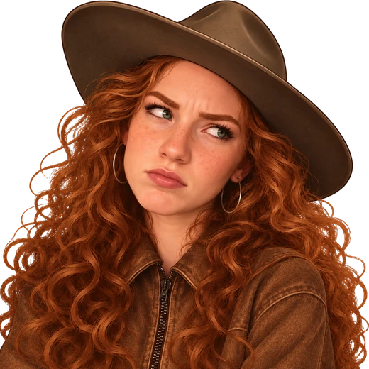
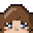

Bea
Bea é a dona do Mercado Central: verduras, sementes, flores e ingredientes fresquinhos.
Rotina
Todos os dias
| Hora | Lugar |
|---|---|
| 6h | Fora do centro |
| 7h | Mercado Central |
| 20h | Fora do centro |
Presentes
No aniversário (14 de Primavera), o presente vale mais: amado ×5, gostou ×3 e neutro ×2.
| Reação | Itens |
|---|---|
| Ama +80 pontos | |
| Gosta +45 pontos | |
| Neutro +20 pontos | Todo o resto (coletáveis e itens comuns) |
| Não gosta −20 pontos |
Eventos de coração
| Corações | Evento | Onde e quando | O que ganha |
|---|---|---|---|
| ♥ 2 | Conversa | Na próxima conversa | Presente: |
| ♥ 4 | Bea: o caderno dos clientes | Mercado Central, das 6h às 11h | Preço de família da Bea: 20% de desconto no Mercado Central. |
Falas
“Bom dia, querida! Tomate fresquinho, ovo caipira, flor do campo. O que vai ser?”
Logo que se conhecem
“Com esses ingredientes dá pra fazer panquecas. Farinha, ovos e leite. Moleza!”
Com amizade
“Você é a CEO mais simpática que já pisou no meu mercado.”
Bem próximas
Mensagens no celular
Com 2 corações, ela manda mensagens de vez em quando (app Mensagens, tecla T). Responder dá amizade e carisma.
Ver as 6 mensagens e as respostas
Chegaram morangos lindos hoje! Separei uma caixinha. Não conta pros outros clientes.
- Segredo guardado! Passo pegar. → Estão na geladeira dos fundos, com seu nome.
- A senhora me mima demais. → Mimo quem merece, filha. E você trabalha demais.
- Vou fazer uma torta com eles. → Então leva o chantili também. Por conta da casa.
Minha neta aprendeu a fazer troco sozinha. Já pode trabalhar no caixa. Tem seis anos.
- Contrata ela! Vai ser gerente. → Ela já pediu um crachá. E um aumento.
- Que orgulho! Dá um beijo nela. → Ela mandou outro de volta. E um desenho de você.
- Seis anos? Mais rápida que eu. → Mais rápida que todo mundo. Puxou a avó.
Promoção de farinha amanhã. Ouvi dizer que alguém anda fazendo panqueca...
- Fui descoberta! Guarda dois pacotes. → Guardados. E ovos fresquinhos também.
- Quem te contou? → A Dona Graça. Ela sabe de tudo. Eu também, um pouco.
- Te levo umas panquecas depois. → Ah, que delícia! Com mel, por favor.
Chegou abóbora do interior que é do tamanho de uma criança. Venha ver, nem que seja só para tirar foto.
- Estou indo agora! → Traz alguém forte. Ou o Barry, que fotografa.
- Vai dar uma sopa enorme. → A Dona Graça já reservou metade. A outra é sua.
- Guarda uma pequena pra mim. → Pequena não chegou. Mas eu corto um pedaço.
Hoje uma senhora me ensinou a escolher melancia batendo nela. Passei a tarde batendo em melancia.
- E qual som é o certo? → Oco, mas feliz. Difícil explicar. Vem que eu mostro.
- Os clientes acharam estranho? → Acharam. Depois começaram a bater também.
- Me ensina essa técnica. → Aula grátis para cliente fiel. Amanhã às 8h.
O morango dessa semana está tão doce que eu escondi uma caixa para você. Não conta para a Vittoria.
- Segredo guardado. → Ótimo. Ela leva tudo se eu deixar.
- Vou fazer uma torta. → Me guarda uma fatia. Eu forneço, você cozinha. Justo.
- Você é a melhor, Bea. → Eu sei. Mas é sempre bom ouvir.
Retratos

| Luthor Corp | |
|---|---|
| CatCo | |
| Moradores | |
| Conti Moretti | |
| De fora da cidade |  Andrea |